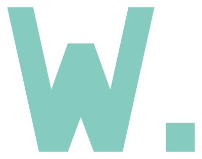
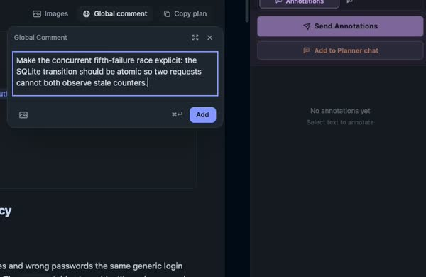
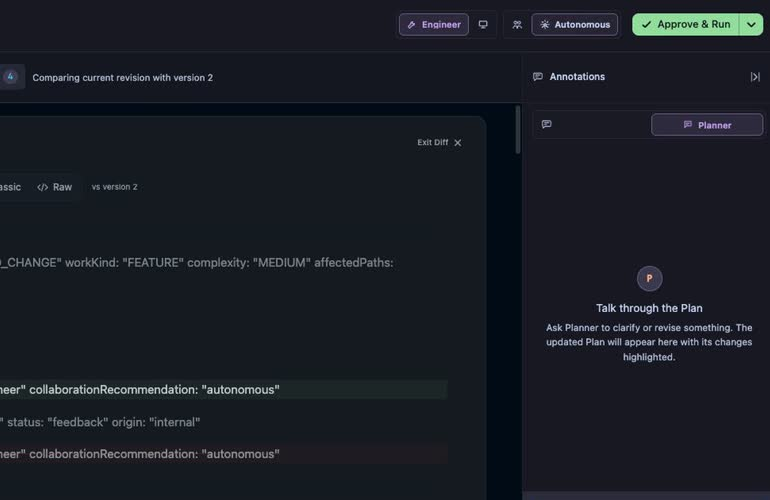
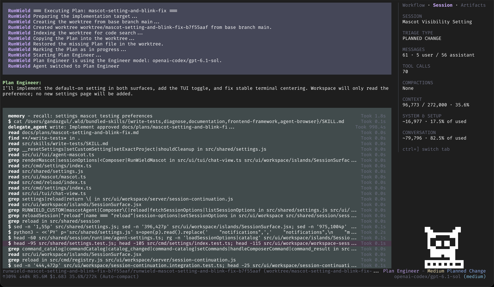
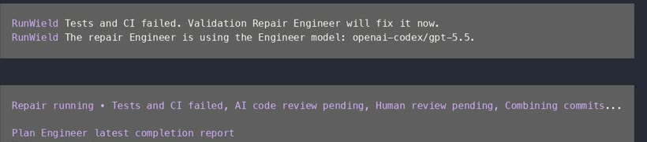
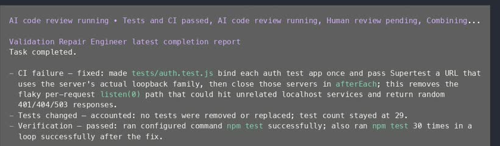
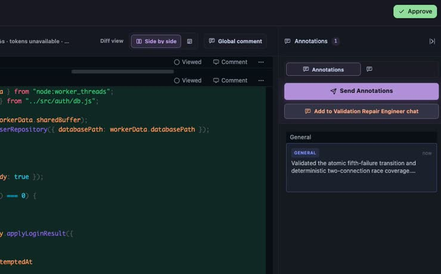
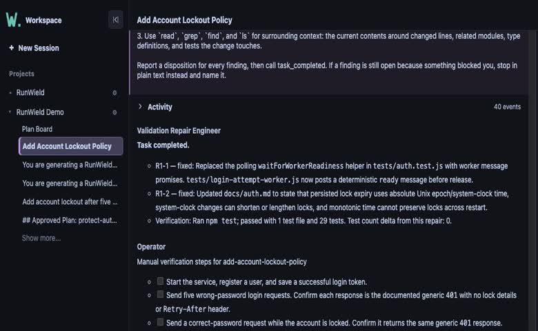

let agents
write code.
keep
engineering
control.
First move: the two clauses build into one promise. “Control” leads straight into the human annotation.
Cut → real Plan ReviewFrom Plan annotation to reviewed code. Big type sets the promise; real product captures supply the proof. Frame 04 now shows your current execution screenshot.
1080 × 1080 · square30 seconds · 8 beatsSilent first cut · voice-over later
let agents
write code.
First move: the two clauses build into one promise. “Control” leads straight into the human annotation.
Cut → real Plan Review
First move: locate the annotation, then follow its submission. Tight crop preserves the actual comment, not browser chrome.
Cut → revised Plan
First move: show the substantive revision, then frame Approve & Run. This still reserves the final approval crop.
Cut on approval → execution
Updated capture: your current TUI, with native colors, Session sidebar, and mascot intact. This is the mascot-setting Plan, not the account-lockout Session in the other recordings.
Still → validation demo01 / failure starts repair

02 / repaired and checked again

First move: hold the failure message. Repair evidence then replaces it with passing checks. Both states are shown here to review the sequence.
Cut → human Code Review
First move: review the diff, then land on the human Approve action. Deliberately hold this decision for recognition.
Cut → same Session in Workspace
First move: reveal the same account-lockout title and repair record in Workspace. The interface changes; the Session does not.
Cut → brand callbackFirst move: the opening promise returns beside the real logo. The URL stays legible for the closing three seconds.
Close · no competing CTAConsistent heading anchors and stage labels carry the viewer across interfaces. Plan Review receives nine seconds; the validation loop receives six. Frame 04 is a current execution example from a different Plan; the remaining recordings follow the account-lockout demo.
Held moment: human Code Review approval. No fabricated product UI, cosmetic “passed” badges, personal browser toolbar, or unreadable whole-screen thumbnails.
Outfit Variable: oversized headlines.
IBM Plex Mono: stage labels.
Flat surfaces. Sharp edges. Real logo.